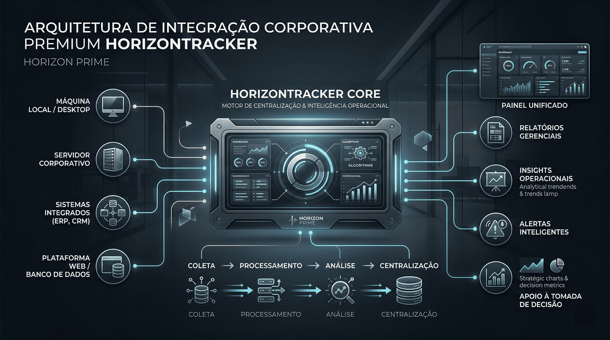

Horizon Prime Intelligence
3 camadas
Endpoints, servidores e sistemas legados falando o mesmo idioma.
Visao central
KPIs, rastreio e contexto operacional em uma unica linha do tempo.
Decisao blindada
Mais clareza para agir com velocidade sem depender de achismo.
Sua empresa cresce de forma horizontal. A sua gestao consegue ver o todo?
Crescer e otimo. Crescer com clareza e Prime. Integramos informacoes da maquina local, do servidor e dos sistemas da empresa para devolver o controle absoluto e a visibilidade para a tomada de decisao.
Centralizacao robusta
Inteligencia operacional

A medida que a empresa cresce, os dados se espalham.
Expansao sem centralizacao gera ruido. A Horizon Prime integra tudo, rastreia o que importa e centraliza a informacao para que sua gestao continue no comando.
Crescer sem perder o controle
Transformamos plataformas distantes em inteligencia conectada e acionavel.
O fim das suposicoes
Informacoes perdidas ao longo da operacao viram uma linha do tempo executiva unica.
Visao estrategica
Saiba exatamente como a operacao performa com dados cruzados em tempo real.
A Realidade
A escuridao dos dados espalhados
Mais sistemas, mais areas e mais dados gerados a cada segundo.
Dados espalhados
Informacoes ocultas em ferramentas e sistemas que nao se conversam.
Falta de visibilidade geral
Fica impossivel saber em tempo real se a operacao expandida esta performando bem.
Dificuldade para aferir resultados
Esforco e produtividade ficam difusos no nivel individual e operacional.
Ausencia de rastreabilidade
Quando a falha acontece, o historico preciso de ponta a ponta simplesmente nao existe.
Dificuldade para decidir
Dados desorganizados empurram a gestao para o improviso e o achismo.
A Resposta
Crescimento horizontal com visao Prime.
Nao criamos mais uma ferramenta. Criamos o ecossistema que liga todas elas.
Inteligencia de negocio
KPIs criticos e insumos executivos prontos para orientar a direcao da empresa.
Rastreio indiscutivel
Auditoria de fluxos do primeiro ao ultimo byte, sem zonas cegas na operacao.
Centralizacao robusta
Conexao profunda entre ERPs, CRMs, bases legadas e pontos criticos da companhia.
Produtividade de fato
Entenda as forcas da operacao para ganhar eficiencia sem microgerenciamento.
A Engenharia
Do espalhado ao centralizado
Como capturamos ruido e entregamos respostas acionaveis.
Coletores ocultos
Nossos agentes monitoram eventos criticos nas pontas com discricao total.
Unificacao de bases
Os dados isolados de cada setor passam a falar o mesmo idioma.
Cruzamento Prime
Encontramos anomalias, picos de producao e areas de risco com contexto real.
Tela de comando
A gestao passa a enxergar o universo da empresa com controle supremo e em tempo real.
O Produto: HorizonTracker
Menos dados espalhados. Mais clareza para decidir.
Uma unica visao para entender, antecipar e direcionar toda a sua operacao.
Maquinas fisicas
Registro exato do uso, atividades e contexto de esforco local.
Sistemas legados
Interligacao com ERPs, CRMs e outras ferramentas do dia a dia.
Servidores e nuvem
Monitoramento denso de carga operacional, acessos e infraestrutura.
Core HorizonTracker
A central onde a clareza maxima e gerada.
Ganhos em Destaque
Sua operacao nao pode ser cega
O que voce ganha ao parar de adivinhar e comecar a rastrear o que importa.
O Que Esperar de Nos
Validado pela industria
Preparados para centralizar infraestruturas construidas nas maiores plataformas do mercado.
 AWS
AWS
 Google
Google
 Linux
Linux
Sobre a Inteligencia Prime
Tratamos dados operacionais como ativos estrategicos
A Horizon Prime entende profundamente a dor da falta de controle. Nossa missao e colocar a gestao no assento do motorista de novo, unificando crescimento e rastreabilidade por meio de software robusto e focado 100% no impacto real da operacao.
Falar com EspecialistaQuanto mais sua empresa cresce, mais dificil fica enxergar sem centralizacao.
Centralize sinais criticos, acompanhe produtividade com contexto e tome decisoes com seguranca.